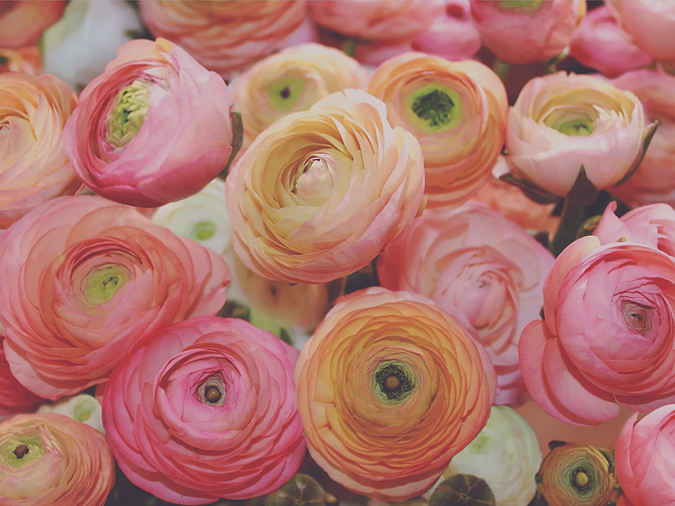
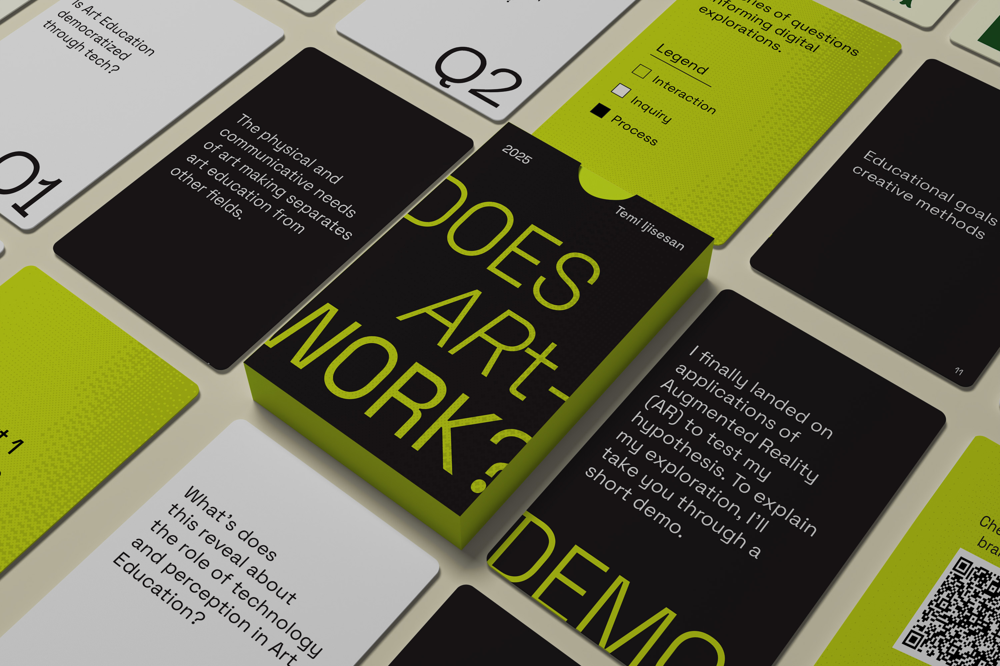

Project 1: Puff Puff Recipe Page
Interaction Foundations
designed an interactive web page for puff puff recipe

Project 2: Fragrance Wheel Microsite (Designer)
Interaction Foundations
designed a microsite exploring different fragrance families and the fragrance wheel

Project 3: Pusheen Microsite (Creative Director)
Interaction Foundations
creatively directed a microsite celebrating Pusheen and its cultural impact

Project 4: Does ARt Work? (AR Exploration)
Integrated Design Projects
explored augmented reality as a medium for art education